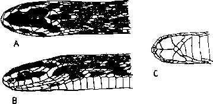

|
Digitized Inventory of Animal Resources: Reptilia ( Snakes ) Principal Investigator: Dr. R. J. B Alfred, Co-Investigator: Dr. Rama Krishna, Contributed by:
Dr. R.C.Sharma |
Elachistodon westermanni (Reinhardt
Taxonomic
Details
----- Scientific Name
----- Classification
----- Synonyms
----- Common Names
Other
Biological Details
----- Habit and
Habitat
----- Distribution
---------- Extent of
Occurrence
---------- Area of occurrence
---------- Altitude
---------- Population
-----
Conservation Status
-----
Diagnostic
Features
-----
Breeding system
Miscellaneous
Information
Literature
Sub-family : elachistodontinae Boulenger 1896
Palato-maxillary areh devoid of teeth, except for a few minute teeth, anterior thoracic vertebrae are with hypapophyses which are much developed and penetrate the wall of the oesophagus; Harderian gland enormously developed.
Genus . Elachistodon Reinhardt 1863
Maxilla edentulous except for two minute teeth, followed by two small grooved fangs. Palatine with a few minute teeth in the middle, edentulous in front and behind. Mandible edentulous in front, followed by a series of 8-12 minute teeth; with a loose articulation between the dentary and the compound bone. Hypapophyses of the anterior vertebrae enlarged, especially modified - some of them with bosses separated from the centra by constrictions (Gans and Williams, 1954, p. 12), and others projecting through longitudinal slits into the oesophagus (Smith, 1943, pp. 403-404). Nasal shield with a pit in its posterior part. Sublinguals present, closely joined together without a median groove, so that "expansion of the chin region can only take place along the angle of the mouth" during ingestion. This expension "is made possible by the presence of the extremely distensible skin between the scales of this region" (Gans and Williams, 1954, p. 7). Vertebral scales enlarged. A single genus with a single species.
Scientific Name : Elachistodon westermanni (Reinhardt 1863)
Family : Colubridae
Sub-family : elachistodontinae Boulenger 1896
Classification: Genus . Elachistodon Reinhardt 1863
Synonyms:
Common Names: indian
egg eater
HABIT & HABITAT Not known. "With the exception of Reinhardt's specimen which had egg yolk (?) in its stomach, no other observations on stomach contents have been published. The consensus of the literature (based on no direct evidence) is that the form eats 'eggs but not exclusively.' The presence of grooved teeth and the nasal pit suggest that the species my feed also on other live prey". (Gans and Williams, 1954, p. 13).
Distribution: Bihar (Purnea); West Bengal (Jalpaiguri, Calcutta).
Conservation status: A rare snake, only 5 specimens are known.
Length : Total length of female is 800 mm., tail 130 mm.
Body : Body moderately elongate, feebly compressed; head somewhat distinct from the neck; tail short, with paired subcaudals; eye large, with vertically elliptic pupils.
Scales : Scales smooth, in 15 rows at mid-body, 19 rows on neck; vertebral series much enlarged; ventrals 208-217; subcaudals 59-65; anal single.
Colouration : Color is dark olive-brown to blackish above, the vertebral scales yellowish white, except at their outer margins forming a light vertebral stripe extending the whole length of the body; sides spotted or flecked with the same color; whitish below the outer margins of the ventrals and adjacent row of scales edged with brown; a yellow stripe along the top of the head from the snout to the angle of the mouth, passing above the eye; an angular bar or spot on the nape; lips yellow."
Breeding Biology : Believed to be oviparous, because the type specimen was a gravid female, containing 7 eggs of 40 x 11 mm size, with a relatively heavy shell.

Elachistodon westermanni Reinhardt :
Head : A. Dorsal view B. Lateral view C. Ventral view